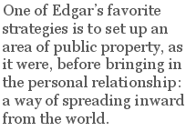

Born in Sydney in 1951, and now living there again after a long sojourn in Hobart, Stephen Edgar stands out among recent Australian poets for the perfection of his craft, a limitless wealth of cultural reference, and an unmatched ability to make science a living subject for lyrical verse. In 2004 he won the coveted Australian Book Review prize for poetry. His collection of 2003, Lost in the Foreground (Duffy and Snellgrove), attracted wide attention, which became wider still with Other Summers (Black Pepper), his collection of 2006: a daunting demonstration of what he could do in a mere two years to bring an already fully developed range of expressiveness to a new level of refinement.... The quickest way of summing up my appreciation of his mastery would be to say that if he were a jazz musician, he would be the kind who, when playing after hours, leads all the others to pack up their instruments and listen. In 2006 he was awarded the Philip Hodgins Memorial Medal.
***
An Almost Perfect Break-up Poem:
Stephen Edgar’s “Man on the Moon”
On a second reading of a poem that has wowed us, we might grow even more interested, but we start to sober up. For my own part, initial admiration for a single poem often tempts me into a vocabulary I would rather avoid. The Australian poet Stephen Edgar’s poem “Man on the Moon” can be found in his collection Other Summers, or — more quickly, and for free — in the selection devoted to his work in the Guest Poets section of my website, clivejames.com. With a single reservation, I think it is a perfect poem, although “perfect” is an adjective I would rather not be caught using. The word just doesn’t convey enough meaning to cover, or even approach, the integrity of the manufacture. I knew that already on a first reading. But on a second reading, I begin to know how I knew it:
Hardly a feature in the evening sky
As yet — near the horizon the cold glow
Of rose and mauve which, as you look on high,
Deepens to Giotto’s dream of indigo.
Giotto is dreaming of indigo because he couldn’t get enough of it: in his time it was a pigment worth its weight in gold. Edgar is always good on facts like that. I could write a commentary picking up on such points, but it wouldn’t say why the poem is perfect, or almost so. The obvious conclusion is that I don’t need to say that. But I want to, because a task has been fudged if I don’t. There are plenty of poems full of solid moments, but the moments don’t hang together even by gravity. So why, in this case, do they cohere?
Hardly a star as yet. And then that frail
Sliver of moon like a thin peel of soap
Gouged by a nail, or the paring of a nail:
Slender enough repository of hope.
We can already see the moments cohering. The indigo sky of the first stanza has supplied the background for the moon, which has become two different things, one growing out of another: the soap paring and the separated crescent of a fingernail, possibly the same fingernail that scratched the soap, but probably not, or he would have said so. These specific but metaphorical details provide the warrant for a general but more abstract statement about hope. Out on its own, the abstract concept of hope could be the town where Bill Clinton was born, or a mantra in a speech by Barack Obama. We don’t know what the poet’s hope is about yet, but here it looks planted securely on firm ground, because of the store of specific noticing that has already been built up:
There was no lack of hope when thirty-five
Full years ago they sent up the Apollo —
Two thirds of all the years I’ve been alive.
They let us out of school, so we could follow
The broadcast of that memorable scene,
Crouching in Mr. Langshaw’s tiny flat,
The whole class huddled round the TV screen.
There’s not much chance, then, of forgetting that.
Now we see where hope was going: all the way to the moon. The Apollo mission landed there in 1969. Add a “full” thirty-five years to this and we can calculate that the poem was written in 2004 or perhaps the year after. Increase thirty-five years by a third and we find that the poet is about fifty-three years old at the time of writing. And he was about seventeen at the time of the landing. So he was in high school, with Mr. Langshaw for a teacher: a dedicated teacher, living alone in tight circumstances, here made tighter by the presence of the whole class. The number of boys in the class is the only statistic we can’t work out, but it must have been a substantial number or the word “whole” would not have been used for effect.
Because these two stanzas form one unit, the first bridging syntactically into the next, we can see that the pace has picked up. The first two stanzas of the poem made one statement at a time, but they were just the overture. This is the opera. Or at any rate the operetta: there is an air of lightness to it, mainly conveyed by “that memorable scene,” which is a knowing allusion to a time-honored line of poetry (from Marvell’s “An Horatian Ode upon Cromwell’s Return from Ireland”), and is obviously put there on the assumption that we also know it, or can at least guess that the heroic elevation of an archaic-sounding phrase is deliberately being used to say that this, too, is history. Those who remember the story of Marvell’s poem will be glad to realize that this time nobody is getting executed. In Marvell’s poem, it is Charles I, and not Cromwell, who bravely faces death, and the diction is a token of the poet’s generous scope of understanding. But to borrow the phrase is also a way for this later poet, Stephen Edgar, to say that literature now must make room for the machines. Readers who go further into his work, as they surely must, will find that Edgar is unusually sensitive to science and technology. They increase his vocabulary, which is lyrically precise over a greater range of human activity than anyone else’s I can think of, with the possible exception of his senior compatriot Les Murray. More of a city boy than Murray, Edgar has fewer words for evoking life on the land. But for all other realms he has whole dictionaries in his head:
And for the first time ever I think now,
As though it were a memory, that you
Were in the world then and alive, and how
Down time’s long labyrinthine avenue
Eventually you’d bring yourself to me
With no excessive haste and none too soon —
As memorable in my history
As that small step for man on to the moon.
And this, suddenly and unexpectedly, is another realm, the realm of personal emotion. One of Edgar’s favorite strategies is to set up an area of public property, as it were, before bringing in the personal relationship: a way of spreading inward from the world. The effect, especially acute in this case, is to dramatize his isolation. But as yet we don’t know that the isolation will mean loneliness. Perhaps he and “you” are still together. The portents, however, are ominous. For one thing, she is probably younger than he. She was in the world then, but the wording suggests that she might not have been so for very long. She was on her way to him, down a “long labyrinthine avenue” that sounds as if it has passed through the mind of Philip Larkin. Edgar is fond — sometimes too fond — of echoing Larkin, but he is usually, as here, careful to echo only the cadences, not the wording. Larkin often used a monosyllabic adjective before a polysyllabic one, with no separating comma. The sonorous glissando of the device was useful to give the pathos of passing time. But Edgar undercuts the evocation of inevitability by giving the loved one an air of caprice. She brings herself (good of her) with no excessive haste (what kept her?) and none too soon (finally she deigns to turn up).
On a fine point of technique, rather than a larger point of tactics, the way that the poet, in the penultimate line quoted, gives “memorable” and “history” their full syllabic value recalls Auden, and in the final line of the octet we can hear Empson, as we can always hear him when trochees are laid over an iambic pattern to give a spondaic tread. Since Edgar obviously weighs his words with care, it is safe to assume that he knows Neil Armstrong blew the script. Armstrong should have said “one small step for a man.” When he fluffed it and said “one small step for man,” he ensured that “man” and “mankind” would mean the same thing and that the sentence would be deprived of its intended contrast. But Edgar seems to be saying that even the giant step for mankind is small — small enough, at any rate, to be matched by the moment in his own history when he and the loved one met:
How pitiful and inveterate the way
We view the paths by which our lives descended
From the far past down to the present day
And fancy those contingencies intended,
A secret destiny planned in advance
Where what is done is as it must be done
For us alone. When really it’s all chance
And the special one might have been anyone.
Here again, a whole argument is bridged over two stanzas, and this time with only a single terminal comma, so that the effect of a lot being said at once is reinforced by the technical fact of compressed syntax. The word “inveterate” gets a hypermetric emphasis, making it sound important enough for us to figure out exactly what it means here, or to look it up if we’ve never seen it. (If we do look it up, we find that the current meanings of something long established and settled by habit are underpinned by a historic meaning of something hostile — an undertone which soon turns out to be appropriate.) In the last line of the stanza we have to figure out, in the absence of the poet’s spoken emphasis, that the word “intended” is an adjective qualifying the noun “contingencies.” That’s one of the tasks fulfilled by the comma: to tell us that the contingencies aren’t about to intend anything, but are, themselves, intended. The other task of the comma is to set up a development in which the contingencies amount to a destiny, which turns out to be the wrong idea. “Where what is done is as it must be done” has a playful musicality, but the play is sad, because it isn’t true: determinism is an illusion. Chance rules, and when the repetition in the line is matched by the repetition in the last line, the game is over. The poem, however, isn’t. Casting our eyes down we see that there is more of it to come, although not much more. It’s going to have to cover a lot of distance in a short time if it is to bring these themes together:
The paths that I imagined to have come
Together and for good have simply crossed
And carried on. And that delirium
We found is cold and sober now and lost.
This time the argument is confined to one stanza and has the effect of a summary. We know that there is more of the poem to come, but it could conceivably end here. The separate trajectories of the mission and the moon successfully met each other according to plan, and the Apollo Lunar Module came down in the right spot. The separate trajectories of the poet and the loved one met each other as well, but each of them kept going. Ecstasy (called “delirium” in retrospect, as if it had been a fever) didn’t hold them together, and the return of sobriety revealed that it couldn’t have. What was “lost” was a big chance, but a chance was all it was. The under-punctuation is an indicator, telling us that he’s had time to work this conclusion out, and that it can therefore be set down economically, as a given. The whole story can be seen in the turn of the second line into the third. The phrase “And carried on” comes out of the turn with a reinforced inevitability. (In the heyday of practical criticism, such an effect would have been called “enactment,” but when it was eventually realized that almost any technical feature could be called enactment, the term thankfully went into abeyance.) The idea that if their two paths crossed they might stick together was a wrong guess on his part. Was it the wrong wish? Well, separation seems to have been her decision, so perhaps she was the wrong woman. Maybe delirium wasn’t what she wanted. We are left free to speculate about all those things as the poem spreads outwards again, and makes an end:
The crescent moon, to quote myself, lies back,
A radiotelescope propped to receive
The signals of the circling zodiac.
I send my thoughts up, wishing to believe
This is only the first stanza of a conclusion that spreads over two stanzas, but let’s break into the flow and see how it works. My own first judgment was that an otherwise unstoppable advance had interrupted itself. On a second reading, I still think so. When I mentioned that I had only one reservation about the poem, the phrase “to quote myself” was it. He isn’t quoting any other part of the poem, so what is he quoting? Investigation reveals that he is quoting another of his poems: “Nocturne,” the second part of a two-part sequence called “Day Work,” which was collected in his previous volume, Lost in the Foreground. A poet need not necessarily be asking too much when he asks us to read one of his poems in the light of others in the same volume, or even in other volumes. In the later Yeats, to take a prominent instance, there are plenty of individual poems making that demand. But when a poem has successfully spent most of its time convincing us that it stands alone, it seems worse than a pity when it doesn’t. It seems like self-injury: a bad tattoo. It was the poem itself that made us wish it to be independent, so it has revised its own demand.
Edgar’s poem can have this flaw and still remain intact. (Presumably the crack in the golden bowl did not stop it holding fruit.) But it’s definitely a blip in the self-contained air of infallibility. The perfect has momentarily become less-than-perfect, with the sole advantage that one is forcibly persuaded that the word “perfect” might mean something. (If it means “stand-alone,” “independent” and “self-contained,” then those are already better words.) But the argument continues despite the backfire. The motor hasn’t stopped running. It powers the radio telescope of the moon, which is listening to the stars, appearing here in their old-style, pre-scientific form. What does he wish to believe about the possible destination of his thoughts after they are beamed up to the soap paring, or nail paring, that has now become a parabolic dish? (This poet doesn’t mix his metaphors: he morphs them.) The answer is in the two-part coda’s second stanza, which is the last stanza of the poem:
That they might strike the moon and be transferred
To where you are and find or join your own.
Don’t smile. I know the notion is absurd,
And everything I think, I think alone.
He wants their two trajectories, his and hers, to join again. But we have seen that they haven’t, and now we are told that they won’t, because when he addresses her, she isn’t there, except in his head. This is a drama for one person, and it’s over. He has been talking to himself all along.
* * *
When reacting to a poem, the word “perfect” is inadequate for the same reason that the word “wow” would be. But it isn’t inadequate because it says nothing. It is inadequate because it is trying to say everything. On a second reading, we begin to deduce that our first reading was complex, even if it seemed simple. Scores of judgments were going on, too quickly for us to catch but adding up to a conviction — first formed early in the piece and then becoming more and more detailed — that this object’s mass of material is held together by a binding force. Such a binding force seems to operate within all successful works of art in any medium, like a singularity in space that takes us in with it, so that we can’t pay attention to anything else, and least of all to all the other works of art that might be just as powerful. We get to pay attention to them only when we recover.
But recover from what? A spell? Here again, all the natural first words are suspect. I could say why I picked this less-than-perfect, but almost perfect, poem by Stephen Edgar out of all the scores of perfect poems by him, and out of all the hundreds of perfect poems by other people. I could say I picked it out because it haunts me. If haunting is what ghosts are good at, hanging around to rattle the pots and rearrange the furniture when you least expect it, then “haunt” is the right verb. But it’s a verb that I would rather not use. I think Edgar is a fine poetic craftsman. But in that sentence there are two other words I would rather not use either. The word “craftsman” always sounds like a doomed attempt to give an artist the same credibility as a master carpenter, and “fine” smacks of self-consciously upmarket (i.e. effectively downmarket) American advertising, as in “fine dining,” “fine linens,” and “fine wine.” Well, yes, of course the poet is a fine craftsman, and of course his poem haunts you with its perfection. All these superannuated words we should take for granted when talking about any poem that is properly realized. Actually to put them back into print is like diving on a wreck, with no yield of treasure except scrap metal.
Yet we need the ideas, if not the vocabulary, if we are to begin talking about why and how the poem in question is a made object, and not a foundling. Every bit of it might well be a trouvaille — how phrases are assembled and lucky strikes are struck is an even deeper question — but all the bits are put together by someone who either knows exactly what he’s doing or else can control the process by which he doesn’t, quite. You could say that the poet, right from the start and without interruption, transmits an air of authority, but I doubt that the phrase counts for much more than all those other words I’ve been trying to avoid. (Even the author of a jingle on a birthday card has an air of authority if you like the sentiment.) The thing to grasp is that the fine words and phrases are standing in for a complex reaction. They serve as tokens for a complete discussion of an intricate process that doesn’t just happen subsequently, on a second reading, but happens initially, on the first reading. Most of the analysis that I have supplied above almost certainly happened the first time that I read the poem, but this time I have written it out.
So much can happen, and in such a short space, only because we bring our own history to the poem, even as it brings the poet’s history to us. Contained within the first reaction are all the mechanisms we have built up through reading poems since we were young: reading them and deciding they were good. (We might have learned even more from the poems that we decided were bad, but we could do that only by having first learned to recognize the good.) This mental store that the reader brings into play on a first reading is, I believe, the missing subject in most of what we call criticism. The missing subject needs to be illuminated if we are fruitfully to pursue all the other subjects that crop up as we speak further. Without that first thing, all the subsequent things might be full of information, but they will lack point. It makes little sense, for example, to say that a poem fits into the general run of a poet’s work if we don’t first find ourselves saying why it stands out even from that. We can say later that it blends in, but it had better be blending in only in the sense that it stands out like a lot of the poet’s other poems. A poem doesn’t, or shouldn’t, express the author’s “poetry,” and it’s a bad sign when we contend that it does. It was a fateful turning point for the career of Ted Hughes when his later poems were discovered to be “Hughesian,” i.e. characteristic instead of unique. The idea that a poet should be praised for producing sequences of poems, and even whole books of poems, that give us nothing but a set of exercises in his own established manner, is ruinous for criticism, and is often the sign of a ruined poet. The great mass of later Lowell is weak when tested by the intensity of early Lowell. Read “A Quaker Graveyard in Nantucket” again — or merely recall the bits of it that you have in your memory — and then try to find anything as strong in the bean silo of History. It takes a critic who has never appreciated the strength of Lowell’s early poems to think that the later work is a development rather than a decline.
In the sum of a poet’s achievement, it isn’t enough that the same tone recurs, and often it’s a sign of deterioration when it does. Edgar, always precise about shades of color at each end of the day, is a modern master of what I would like to call the daylight nocturne, but I would expect to arouse suspicion if I praised one of his poems for having no other characteristics. As it happens, almost every poem he publishes is impossible to reduce to a kit of favorite effects. The argument and its illustrations always serve each other inseparably: they can be discussed separately, but they flow back together straight away. So everything I can say about him follows from his capacity to produce the unified thing. From that initial point, the discussion can widen. We can say that Edgar suffers from the peculiar Australian critical climate in which it is widely and honestly believed that a rhymed poem in regular stanzas must be inhibiting to a sense of expression that would otherwise flow more freely. The elementary truth that there are levels of imagination that a poet won’t reach unless formal restrictions force him to has been largely supplanted, in Australia, by a more sophisticated (though far less intelligent) conviction that freedom of expression is more likely to be attained through letting the structure follow the impulse.
In that climate, Stephen Edgar’s name is not yet properly valued even in Australia. To believe that it one day will be, you have to believe that something so good is bound to prevail. But that might not happen. Australia (and here we enter into sociology and politics) has a small literary market anyway, and for poetry it is minuscule, so prizes and grants count. Though his position has somewhat improved lately, Edgar has been awarded remarkably few of either: partly because, I fear, the committees are stacked with poets who couldn’t write in a set form to save their lives, and with critics and academics who believe that the whole idea of a set form is obsolete. It would be nice to think that this tendency could be reversed by the example of a single poet. But of course it can’t. All one can do is argue for the importance of his work, and that argument must start with the certainty of our first judgment, made on a first reading: a judgment which is not yet concerned with advocacy. On a second reading we can, and must, begin to propose a restoration of the balance. There is a place for free forms: they no longer have to justify themselves. There should be a place for regular forms too, but they now have to justify themselves every time. One of Edgar’s dictionaries is a classical dictionary. He can read the ancient languages, and might have written poems with no properties except those from the far past. But his work participates in a new classicism, fit to incorporate the modern world, in which it deserves a high place. Almost any of his poems will tell us that, on a first reading. The second reading tells us why we should try to tell everyone else.
Thanks to Clive James for permission to reproduce (slightly edited) the Introduction from the Stephen Edgar page on his website, http://www.clivejames.com, and the essay “An Almost Perfect Break-up Poem...” from the January 2009 issue of Poetry (Chicago). And thanks to Christian Wiman, Editor of Poetry, for agreeing to our republishing the essay at this time.
Thanks also to Carol Jenkins at River Road Press for permission to use Stephen Edgar’s reading of “Man on the Moon”, from the CD selection of his work, Photography for Beginners. The relevant page on the River Road Press site is here.
At his base in London, Clive James is currently working on a fifth volume of memoirs, to be entitled The Blaze of Obscurity and published late in 2009 by Picador. Also scheduled for this year are a new collection of recent essays, The Revolt of the Pendulum, and the British edition of his selected poems Opal Sunset, already published in America by Norton. His most recent collection of poetry is Angels Over Elsinore and his most recent book of prose is Cultural Amnesia.